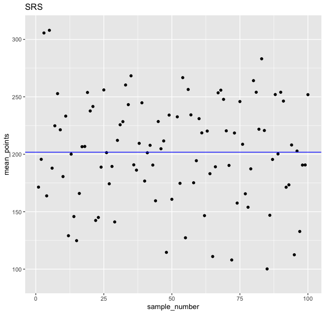

Update: GROUP project
- Submit the outline of the project by Thursday 12 pm
- What is your specific area of interest?
- Why is it more important than other areas?
- Why is the cell phone tracking data fit for your interest?
- One page outline, no coding is necessary
- Give you a feedback
- Submit the initial report by November 4th
- Need to adress:
- Previous motivations
- Feedback
- What is the main challenge in answering the questions?
- To answer the question, how do you manipulate/refine data, verbally?
- 11 font size, 3 page double-space report
Schedule meetings on November 21th—25th to discuss your progress during office hours or zoom
SRS revisit
- Think about players in basketball play in different positions on the court
- Points, assists may depend on their position
- If we perform simple random sampling, there's a chance that some categories won't be included in our sample
- Revisit WNBA 2016-2017 season data
- We might want to analyze the patterns for each individual position
- there are five unique positions in our dataset
- The downside of simple random sampling is that it can leave out individuals playing in a certain position on the field
- To ensure we end up with a sample that has observations for all the categories of interest, we can change the sampling method
- We can organize our dataset into different groups, and then do simple random sampling for every group
- This sampling method is called stratified sampling
- Each individual stratified group is also known as a stratum, and multiple groups are known as strata
Simple Random Sampling
library(dplyr)
set.seed(1)
wnba_sampled <- sample_n(wnba, size = 10)
head(wnba_sampled)
- When we print the first six rows of the dataframe, we can see that all variables from the wnba dataframe are preserved
- When we estimate the average total points scored for this 10-player sample, we get these results:
mean(wnba_sampled$PTS)
Stratified Sampling
- When data is split with the group_by() function, this effectively creates strata
- Once the data is split, we can apply one or more functions to each strata
set.seed(1)
wnba %>%
# Split: stratify by player position
group_by(Pos) %>%
# Apply: sample 10 observations for each player position stratum
sample_n(10) %>%
# Apply & combine: calculate average points scored for each stratum, combine results
summarize(mean_pts = mean(PTS))
# A tibble: 5 × 2
Pos mean_pts
1 C 182.
2 F 185.
3 F/C 190.
4 G 184.
5 G/F 198.
- The problem is that the number of total points is influenced by the number of games played
min(wnba$Games_Played)
[1] 2
man(wnba$Games_Played)
[1] 32
wnba %>%
mutate(games_stratum = cut(Games_Played, breaks = 3)) %>%
group_by(games_stratum) %>%
summarize(n = n()) %>%
mutate(percentage = n / sum(n) * 100) %>%
arrange(desc(percentage))
# A tibble: 3 × 3
games_stratum n percentage
1 (22,32] 104 72.7
2 (12,22] 26 18.2
3 (1.97,12] 13 9.09
- Now we notice the potential problem of SRS when calculating statistsic
- How do we handle it?
- One solution to this problem is to use stratified sampling while being mindful of the proportions in the population
- We can stratify our dataset by the number of games played, and then sample randomly from each stratum a proportional number of observations

- The variability of the sampling was quite large, and many sample means were unrepresentative, being far from the population mean
- In fact, this sampling method doesn't seem to perform better than simple random sampling
- Because of the choice of strata
- stratified the data by the number of games played
- It makes more sense to stratify the data by number of minutes played, rather than by number of games played
- Here are a few guidelines for choosing good strata:
- minimize the variability within each stratum
- maximize the variability between strata
- the stratification criterion should be strongly correlated with the property you're trying to measure
Side note
- We have been working with the sample_n() function from dplyr in this lesson because it returns randomly sampled rows from a dataframe
- The dplyr package also offers the sample_frac() function that returns a dataframe of randomly sampled rows
over_22 <- wnba %>%
filter(Games_Played > 22) %>%
sample_frac(0.25)
Measuring Variability
- Variance: look at average squared deviations from the mean
- positive and negative gaps get equal weight
- Notation 1
- random variable: $Y_i$
- Expectation: $E[Y_i]$, formal notions of probability
- a weighted average of all possible values that $Y_i$ can take on
- what's a weight?
- For a given population
- there is only one $E[Y_i]$, while there are many $\bar{Y}$, depending on how we choose $n$
- $E[Y_i]$ called a parameter
- LLN tells that in large samples, the sample avearge is likely to be very close to the corresponding population mean
- The sample variance of $Y_i$ in a sample size $n$ is defined as $S(Y_i)^2 = \frac{1}{n}\sum_{i=1}^{n}(Y_i-\bar{Y})^2$
- The corresponding population variance replaces averages with expectations, giving:
$V(Y_i) = E[(Y_i-E[Y_i])^2]$
- Like $E[Y_i]$, the quantity $V(Y_i)$ is a fixed feature of a population: a parameter
- Because variances square the data, it can be very large
- Use the square root of the variance: standard deviation, $\sigma_Y$
- Suppose we are interested in quantifying the variance of the sample mean in repeated samples
- $V(\bar{Y})=E[(\bar{Y}-E[\bar{Y}])^2] = E[(\bar{Y}-E[Y_i])^2]$
- Note that $V(Y_i)$ is different from $V(\bar{Y})$
- We write $V(\bar{Y})$ for the variance of the sample mean, while $V(Y_i)$ denotes the variance of the underlying data
- $V(\bar{Y})$ is called sampling variance
- $V(\bar{Y})$ is related to descriptive variance, but sit is etermined by sample size.
- $V(\bar{Y})=V([\frac{1}{n}\sum_{i=1}^{n}Y_i])$
- Assuming: independent and identically distributed random samples
- $V(\bar{Y})=\frac{1}{n^2}\sum_{i=1}^{n}\sigma_Y^2=\frac{\sigma_Y^2}{n}$
- $V(\bar{Y})=\frac{\sigma_Y^2}{n}$
- More data means less dispersion of sample avareges in repeated samples
- When the sample size is very large, there's almost no dispersion at all
- In practice, often work with the standard deviation of the sample mean, called standard error
- $SE(\bar{Y}) = \frac{\sigma_Y}{\sqrt{n}}$
- Most population quantities are unknown and must be estimated
- When quantifying the sampling variance of a sample mean, we work with an estimated standard error
- $\hat{SE(\bar{Y})} = \frac{S(Y_i)}{\sqrt{n}}$
- Having laid out a simple scheme to measure variability using standard erros, it remains to interpret this measure
t-Statistic and the Central Limit Theorem
- Suppose the data at hand come from a distribution for which we believe $E[Y_i]$ takes $\mu$
- called a working hypothesis, or the null hypothesis as a reference point
- A t-statistic for the sample mean under the hypothesis is consutrcted as
- $t(\mu)=\frac{\bar{Y}-\mu}{\hat{SE}(\bar{Y})}$
- When $\mu=0$, the t-statistic is the ratio of the sample mean to its estimated standard error
- If $E[Y_i]=\mu$, the quantity $t(\mu)$ has as a sampling distribution that is very close to a bell-shaped standard normal distribution
- called the Central Limit Theorem
- For the standard normal distribution:
- values large than $\pm 2$ are highly unlikely
- less than 5% of the time
- Customary to judge any t-stat larger than about 2 as too unlikely to be consistent with the null
- When the null is 0, and the t-stat exceeds 2 in absolute value, the sample mean is significantly different from zero
- We can construct the set of all values of $\mu$ consistent with the data
- confidence interval for $E[Y_i]$
- $[\bar{Y}-2\times \hat{SE}(\bar{Y}),\bar{Y}+2\times \hat{SE}(\bar{Y})]$
Data Preparation
There is a collection of standard data preparation algorithms that can be applied to structured data
- Techniques such as data cleaning can identify and fix errors in data like missing values
- Data transforms can change the sacle, type, and probability distribution of variables in the dataset
- Techniques such as feature selection and dimensionality reduction can reduce the number of input variables
We are going to learn
- Data Cleaning
- identify and correct mistakes or erros in the data
- Feature Selection
- identify those input variables that are most relevant to the task
- Data Transforms
- change the scale or distribution of variables
- Feature Engineering
- derive new variables from available data
- Dimensionality Reduction
- create compact projections of the data